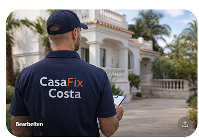

Vertrauen entsteht nicht durch große Worte, sondern durch Haltung, Klarheit und Verlässlichkeit.
Hinter Costa Care Alicante steht kein anonymer Verwaltungsapparat, sondern eine Person mit handwerklicher Verwurzelung, hohem Qualitätsanspruch und strukturierter Arbeitsweise. Genau diese Kombination ist für Eigentümer entscheidend, die ihre Immobilie nicht irgendwem überlassen wollen.

Wer ich bin
Mein Name ist Marco Weiß. Mein Hintergrund verbindet praktische Handwerkserfahrung, Premium-Qualitätsanspruch und strukturierte Prozesskompetenz. Daraus entsteht ein Betreuungsansatz, der nicht laut auftritt, sondern sauber arbeitet: präsent, klar, dokumentiert und verlässlich.
Handwerklich verwurzelt
Ich bin im Handwerk verwurzelt und auf Baustellen groß geworden. Dazu kommt eine abgeschlossene handwerkliche Ausbildung. Das sorgt für einen realistischen Blick auf Zustand, Ausführung, erkennbare Auffälligkeiten und sinnvolle Abläufe vor Ort. Ich verspreche keine Wunder, aber ich sehe oft früher, wenn etwas nicht stimmt.
12 Jahre Premium-Erfahrung bei Audi
Über viele Jahre in einem Premium-Umfeld geprägt zu sein, schärft den Blick für Qualität, Genauigkeit und Standards. Diese Haltung ist heute Teil meiner Arbeitsweise: lieber sauber und klar als hektisch und halb gemacht.
8 Jahre diplomatischer Dienst & NATO-Erfahrung
Diskretion, Verbindlichkeit, professioneller Umgang mit sensiblen Situationen und ruhiges Handeln unter Verantwortung sind für mich keine Marketingbegriffe. Gerade bei hochwertigen oder leerstehenden Immobilien ist genau das ein echter Vertrauensfaktor.
Was zusätzlich dahinter steht
Eigentümer brauchen nicht nur jemanden, der vor Ort nach dem Rechten sieht. Sie brauchen jemanden, der Informationen einordnet, Abläufe strukturiert und Verantwortung nicht wegdelegiert.
Geprüfter Logistikmeister (IHK)
Die Weiterbildung zum geprüften Logistikmeister steht für Planung, Koordination, Priorisierung und strukturierte Umsetzung. Für Costa Care Alicante heißt das: keine diffuse Betreuung, sondern nachvollziehbare Abläufe, klare Rückmeldungen und ein Ansprechpartner, der mitdenkt.
Wofür ich stehe
- Verlässliche Präsenz vor Ort
- Klare und ehrliche Kommunikation
- Saubere Abgrenzung der Leistungen
- Dokumentation statt vager Aussagen
- Persönliche Verantwortung statt anonymer Abwicklung
Warum das für Eigentümer relevant ist
Viele Eigentümer suchen nicht einfach irgendeinen lokalen Kontakt. Gesucht wird eine Person, die Vertrauen verdient, sauber kommuniziert und vor Ort Verantwortung übernimmt. Genau an diesem Punkt trennt sich gewöhnlicher Service von echter Betreuung.
Geschulter Blick
Sichtbare Auffälligkeiten, Zustandsveränderungen und potenzielle Probleme werden früher erkannt und realistischer eingeordnet.
Strukturierte Rückmeldung
Eigentümer erhalten keine unklaren Aussagen, sondern nachvollziehbare Information mit klarer Einordnung und sauberer Dokumentation.
Vertrauenswürdiger Ansprechpartner
Gerade bei leerstehenden, hochwertigen oder sensiblen Immobilien ist entscheidend, wem man Verantwortung vor Ort tatsächlich überträgt.
Mein Anspruch mit Costa Care Alicante
Ich will kein beliebiger Hausmeisterservice sein und auch keine anonyme Verwaltung imitieren. Costa Care Alicante steht für eine ruhige, hochwertige und klar abgegrenzte Betreuung für Eigentümer, die Kontrolle, Übersicht und einen verlässlichen Ansprechpartner vor Ort suchen.
Kontakt
Wenn Sie wissen möchten, ob Costa Care Alicante zu Ihrer Immobilie passt, ist eine erste Anfrage der beste nächste Schritt.